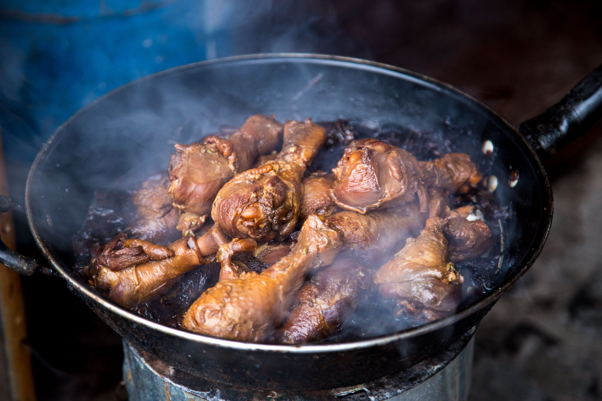

Chicken adobo is widely considered the quintessential comfort food of the Philippines, deeply woven into the fabric of Filipino culture and universally loved across households and communities. Its origins trace back to the pre-colonial era, when indigenous Filipinos used vinegar and salt to preserve meats in the tropical climate. When Spanish colonizers arrived in the 16th century, they witnessed this traditional marinating process and dubbed it adobo, from the Spanish word adobar (meaning "to marinate" or "to pickle"). Today, it is celebrated as an unofficial national dish, evoking a powerful sense of home, nostalgia, and culinary pride.
The magic of chicken adobo lies in its simple yet masterfully balanced flavor profile, which hits the palate with a bold harmony of savory, sour, and pungent notes. Bone-in chicken pieces are simmered slowly in a rich braise of cane vinegar, soy sauce, garlic, black peppercorns, and bay leaves. As the liquid reduces, the meat becomes incredibly tender, soaking up the sharp tang of the vinegar and the deep umami of the soy sauce. The result is a deeply savory, slightly tangy dish with a luxurious, garlic-infused sauce that is traditionally spooned generously over steaming mounds of white rice.